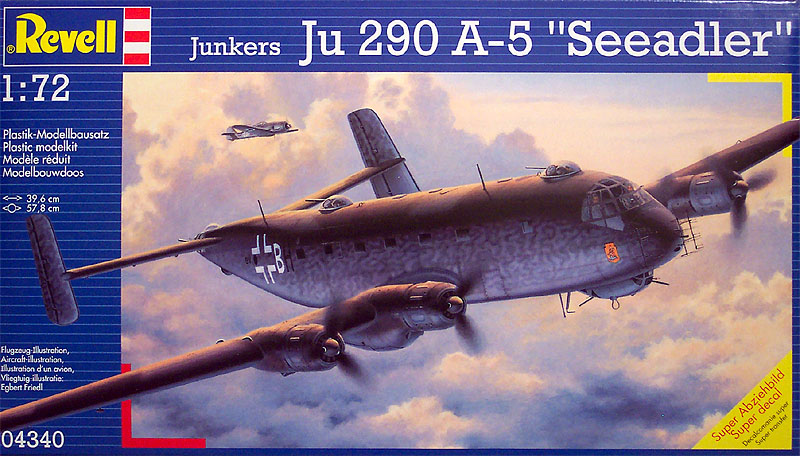
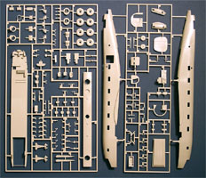
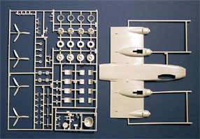
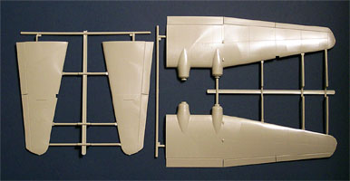
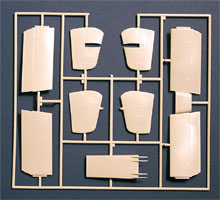
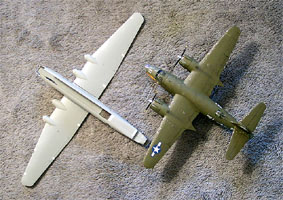
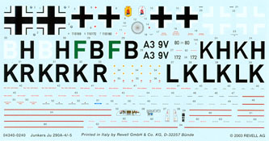
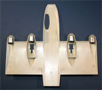

{kind=link}
{kind=link}
{kind=link}
{kind=link}
{kind=link}
{kind=link}
{kind=link}
{kind=link}


Revell of Germany 1/72 Scale Junker Ju-290 A-5 'Seeadler'

Kit # 4340 MSRP $30.50
Images and text Copyright � 2004 by Matt Swan
Developmental History
The Ju-290 was the only four-engined heavy-duty aircraft used by the Luftwaffe in World War II and was the forerunner of the subsequent transatlantic civil aircraft. The 290 was a direct development of the Junkers Ju-90 airliner. The German army encountered the problem of maintaining supplies in sufficient quantities to the combat units in Russia during the winter of 1941. The only immediate solution was the development of available 4-engined Junkers Ju-90 civilian airliners into a larger and more up-to-date military transport under the designation Ju-290A. Equipped with loading ramps in their tails and defensive gun turrets, the first five production aircraft as well as two prototype aircraft participated in the Stalingrad Airlift.
Meanwhile, the necessity of a long-range maritime reconnaissance airplane of long reach became indispensable to maintain adequate surveillance of the allied convoys. The Ju-290A-2 carried search radar; the 200 FuG Hohentwiel, had a range of over 3,000 km and could remain airborne for over 20 hours. For its patrol role it was well-equipped and was soon replacing Folke Wulf 200 Condors. Minor changes in armament distinguished the A-3 and A-4, leading to the definitive A-5 variant that introduced a system of self sealing fuel tanks and better shielding for the crew cabin. Only 65 were built, as bombers, long-range reconnaissance aircraft, and transports but there were never more than 20 in service at any given time. The first series of aircraft were painted RLM 65/70/71 and any aircraft used in Naval recon were painted in RLM 65/72/73.
The later versions of the aircraft had exhibited very promising characteristics though, with ever-increasing range and heavier armament, including the capability to carry the various guided anti-shipping missiles under development. Three Ju 290s, carrying extra fuel tanks, made a non-stop flight to Manchuria to exchange technical data with the Japanese. The "long legs" of the Ju-290 made it an excellent candidate for the Amerika Bomber project. As Germany lost access to the ocean, their role soon evaporated. By October 1944 all production was stopped.
A number of Ju-290s survived the war. The Allies evaluated at least three. The one the US got (an A-4, number 0165, with a bulbous nose from Letov/Prague and the FuG 203 from Dornier) was used on night operations so it was painted black underneath. The British also received two for evaluation. A Ju-290A-9, number 0185, unit was prepared as a personal transport for Adolph Hitler. It had a pressurized cabin and was designed to seat 50. This aircraft flew with the I/KG200 from Finsterwalde and made one flight to Barcelona (Spain) May 23, 1944 under the command of the Captain Braun, first commander of LTS 290. An A-5, number 0178, was acquired by the Spanish and used as a government transport of personnel for the Superior School of Flight in Salamanca. It was retired from service due to an accident in the mid 1950�s. One final Ju-290 was built by Letov after the war, utilizing parts intended for the Ju-290B high-altitude prototype. It was completed as an airliner, designated Letov L.290 Orel.
The Kit
This kit arrives in a relatively large box with fabulous artwork but what is immediately disappointing is that the box is one of those open ended affairs rather than the more conventional two-piece box that will provide the modeler with a nice storage spot while under construction. I always feel like I�m going to lose some small piece whenever I work with these open-end boxes. This box is full of goodies though, first we have a single large bag containing all the parts trees. Personally, I would rather see the parts bagged individually to help prevent shipping damage. This is the first thing I looked for and sure enough, I found some. There was some slight abrasion on some of the pieces from contact during transport but nothing severe. On both large upper wing sections there is a small molded light on the wing tip and both of these were bent to the point of nearly being separated from the wing � would individual bagging have prevented this? I am not sure. The large tree of clear parts did have their own bag to prevent abrasion damage, which was good.




You may click on the images above to view larger pictures
Okay, lets take a look at the parts now. We get seven large trees of parts done in a medium to light gray polystyrene. The parts display crisply engraved panel lines throughout and almost no flash. The finish on the parts is smooth and typical of what I would expect from Revell-Monogram. Even in 1/72 scale this is a large model and one of the first things I am concerned about is warpage, the fuselage and wings are nice and straight. I can find no evidence of warpage or any sink marks in the larger parts. The main wing is done as a five-piece assembly and does indeed fit together quite well with all panel lines matching up nicely. I did find sink marks in both main landing gear struts but they are located at the top of the struts and will most likely be hidden within the structure of the aircraft. If not they should not be difficult to fill.

The wingspan on this model is nearly 58 cm. That is pretty impressive but what is not impressive is the lack of any type of wing spar to help hold the dihedral or even to help maintain a secure bond to the body of the aircraft. It will be imperative that the modeler creates a strong glue joint at the fuselage. I taped the main wing together and placed the primary fuselage parts onto it to get an idea of overall size. You should click on that picture to the right to see just how this 1/72 aircraft measures up to a 1/48 Marauder � it�s very big! There are a variety of injector pin markings across the interior areas of the fuselage and wings. It is apparent that the designers of the kit have gone to great efforts to minimize these in areas that may be visible after construction has been completed. They do not appear to present a big problem. The backside of the dash will be visible from the exterior and some minor detail has been incorporated there � not a lot. The engines are very nicely done including the cooling fans and look like they will be adequate should the modeler wish to open up an engine compartment for servicing. The propellers all have a very nice shape to them and a very clean casting. The radar array is oversized for the scale but that is a common problem when trying to duplicate items this delicate in polystyrene, they would look better if they could be replaced with some photo etched details.
So, pieces and parts wise this is what we have here; there are thirty-five clear pieces (Wow) on one sprue, 229 gray injection mold pieces (Holy Cow!) for a grand total of 264 pieces of plastic in the box. Now that is enough plastic to keep even the most serious modeler busy for a little while.
Decals and Instructions

In the decal package we have a very large sheet that provides basic markings for four different aircraft. All of the aircraft offered are done in the basic RLM 74/75 over RLM 65 color scheme with one having a mottled pattern on the fuselage sides. There are no markings included for Naval operations. While the dash and other instrument panel pieces do have raised details that can be painted we are also given the option to use decals for the instrument faces and we get a decal for the suppressed radar array. There are lots of service stencils, warning and walkway markings provided on the sheet. Print registry looks to be very good and the color density looks good also. From previous experience with Revell decals I see no reason to believe that these would cause any trouble when mixed with the common setting solutions available on the market.
The instruction package is printed on recycled paper which, while ecologically and economically feasible, does not have the quality feel that the rest of the kit exudes. We have a twenty-four page booklet here that begins with a fairly well detailed historical and specification background of the aircraft in both German and English. Two pages are consumed with the basic safety warnings and key codes, nearly an entire page is devoted to color-codes also. Paint colors are identified by name only, no FS numbers or alternative manufacture code numbers are given. One and one-half pages are set aside for a pictorial review of the parts trees and this includes all the part numbers. The parts are also numbered on the trees. By time we get to page six we are starting to look at exploded construction views. The next twelve pages are all exploded construction views that all appear concise, logical and are full of color call-outs. Four pages at the end of the package cover decal placement and exterior color schemes; each aircraft gets one page of instruction. The last three pages of the booklet are blank. Overall the instructions appear to be well done and have a low confusion factor.
Conclusions
What a huge aircraft. This is a very complex model but Revell has done a great job of engineering, which will make it an achievable build for just about any modeler of at least average skill. The parts are all well done and I would rate the engines as exceptional for detail. Parts detail is very good and there is no warpage evident in any of the larger parts.

While the decals are nicely done, offer a great range of stencils and have good color density I would have liked to have seen at least one Naval operations aircraft. That was a bit of a letdown but maybe the aftermarket industry will come to my rescue on this score. Sometimes when you start to look over a new kit it will �talk to you� and this one is talking to me. It tells me that it wants to be motorized.
Sometimes I am drawn to do stuff like that and install small electric motors and fiber-optic lighting in models. When that happens I go to All Electronics for my motor needs. They have a great selection of small motors and will send you a free catalog just for the asking. I had some DCM-166 motors on hand and tried them out in the wing � fit like a charm. With the way that the fuselage roof is designed to be removable it may be possible to install a battery pack in the fuselage and maybe even run some lights in this sucker. I could even see arranging one of the turrets to be an on/off switch. Yes, this model is talking to me.
At the time of this writing this kit has only been available for a few weeks so there is nothing available on the after market other than a reference book by Schiffer Publishing. Hopefully, before too much longer, the after market producers will come out with a few of the more desperately needed items such as a photo etched radar array, decals for Naval units, replacement resin tires and maybe a replacement nose for an A-8 unit. Only time will tell. This is a well done model of an interesting aircraft, I would recommend having one of these in your collection.